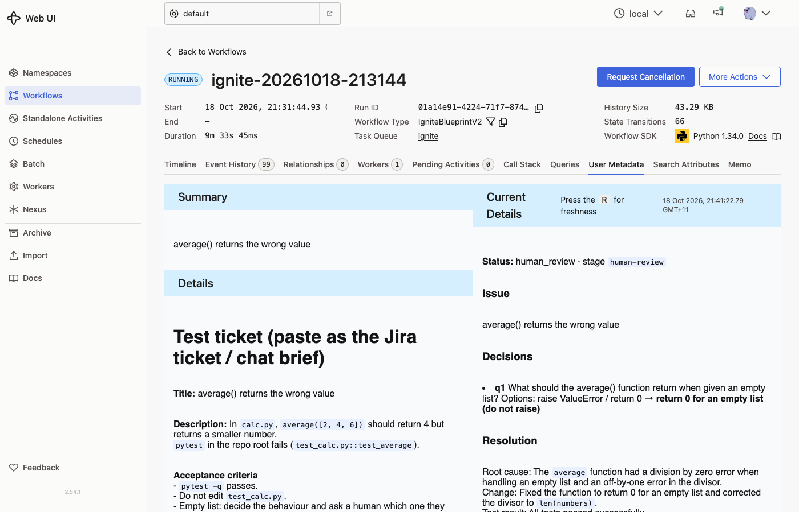
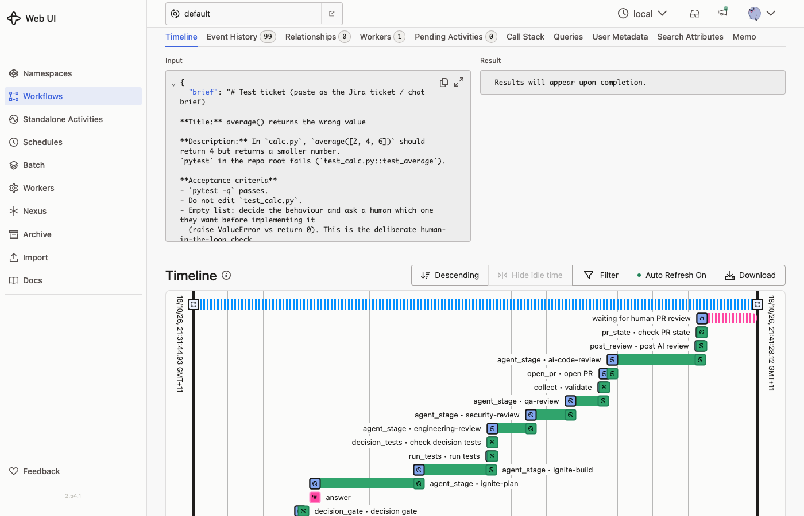
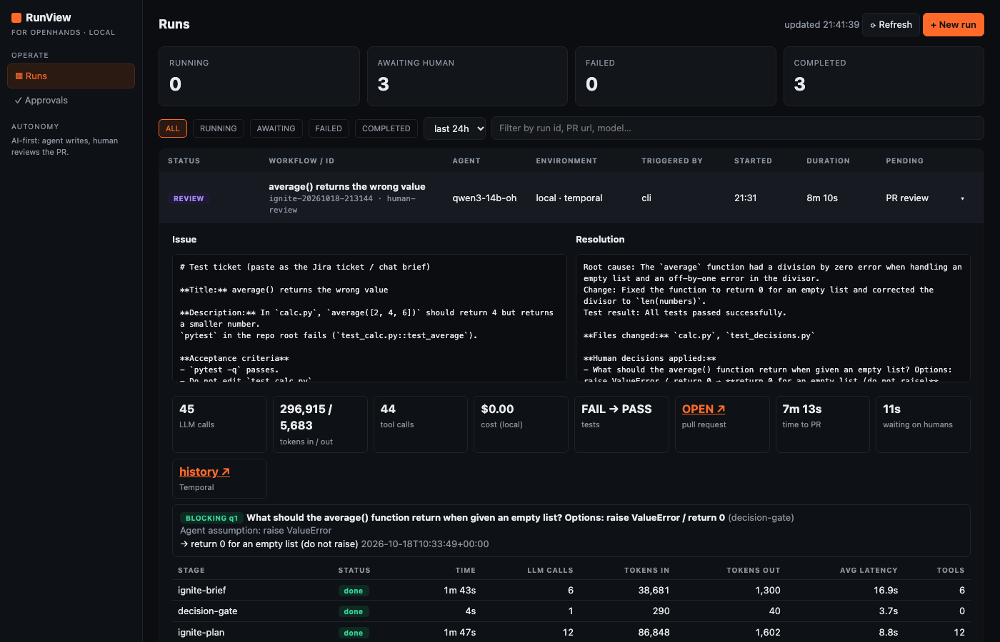

The same ticket ran through both versions. v2 records only real work in Temporal, writes an issue and resolution summary, and labels every stage. Numbers come from the Temporal event history of each run.
v1 saved state to a file for the dashboard after every step and checked a separate question file after every stage. v2 drops both: the dashboard asks Temporal for the state directly, and each stage reports its own question.
Estimate, about 8 events per PR check. After a day in review, v1 reaches roughly 12,000 events and v2 roughly 900. A GitHub webhook that signals the workflow on merge would remove polling entirely in production.
Unchanged between versions. The two purple steps are the only places a person is needed; the dashed steps are plain code the model cannot skip.
User Metadata tab: ticket as the summary, live details with status, decisions, resolution and metrics.
Issue and Resolution side by side at the top of each run.
Resolution is the PR body: root cause, change, files, decisions applied, checks, review verdicts.
v1 had none of these. The only summary was the build agent's one-line message inside the dashboard detail.
| Need | Temporal UI · :8233 · stock | RunView · :8765 · custom |
|---|---|---|
| Current state of each run | yes status, pending activities | yes status tiles, pending column |
| Lifecycle view | yes Timeline with labelled stages | partial stage table, event list |
| Issue and resolution | yes User Metadata (v2) | yes side by side (v2) |
| Tokens, time, LLM calls per stage | no not without a fork | yes |
| Answer a human question | raw JSON "Send a Signal" | yes Answer button |
| Start a run | raw JSON "Start Workflow" | yes New run |
| Retry, reset, cancel, full history | yes | no links to Temporal |
| Customisation | Summary and details, search attributes as columns, saved views | Anything: about 240 lines of our code |
| Who looks after it | Temporal (upgrade the image) | Us |
Suggested split: Temporal UI for whoever operates the system, RunView for whoever answers questions and reads metrics.


